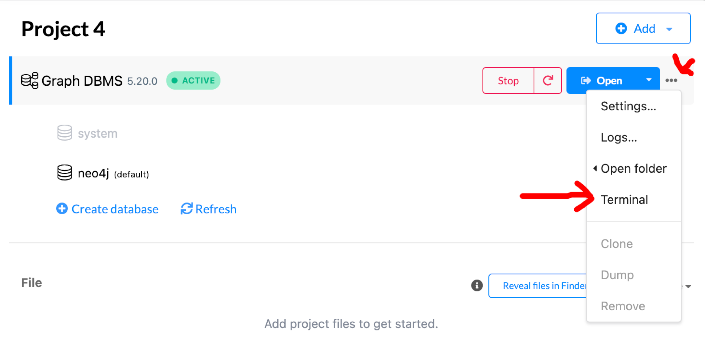
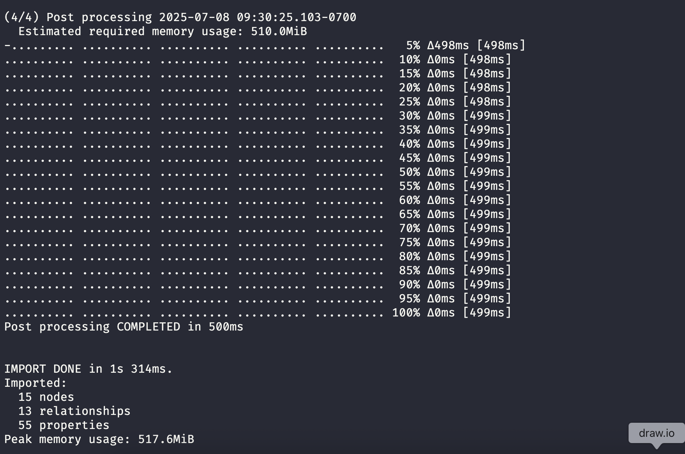
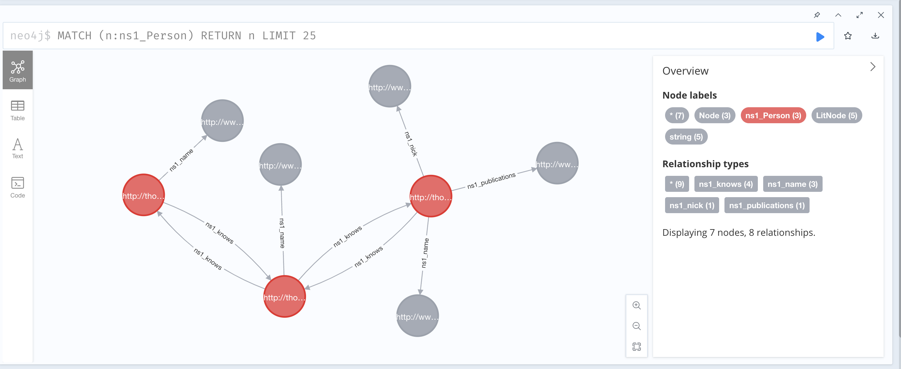
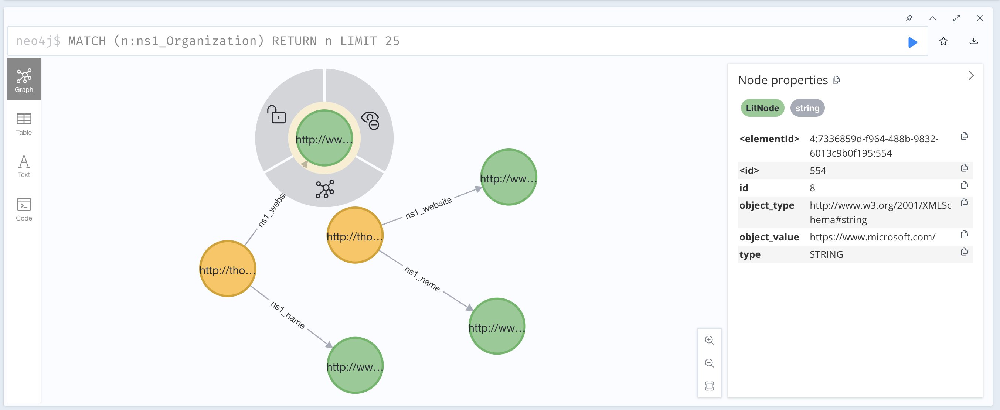

Transforming Knowledge Graphs to LPG with KG2PG
Background
If you're reading this, then chances are you already know that there are two predominant frameworks for graph technology: RDF and LPG. Graphs in each framework differ from each other in several critical areas, mostly due to each solving a different set of problems. While RDF aims to describe web resources while supporting logical reasoning on its data, LPG focuses more on data science applications. Bringing these concepts over to RDF has been a topic of a number of papers; I've listed a few below to get an idea of interest in the field (don't actually read them).
2010 - A Tale of Two Graphs: Property Graphs as RDF in Oracle
2014 - Reconciliation of RDF* and property graphs
2016 - RDF data in property graph model
2018 - Getting the best of Linked Data and Property Graphs: rdf2neo and the KnetMiner Use Case
2018 - Mapping RDF graphs to property graphs
2019 - A unified relational storage scheme for RDF and property graphs
2019 - RDF and Property Graphs Interoperability: Status and Issues
2020 - The GraphBRAIN System for Knowledge Graph Management and Advanced Fruition
2020 - G2GML: Graph to Graph Mapping Language for Bridging RDF and Property Graphs
2020 - Mapping rdf databases to property graph databases
2020 - Describing Property Graphs in RDF
2020 - Transforming RDF to Property Graph in Hugegraph
2021 - Semantic Property Graph for Scalable Knowledge Graph Analytics
2022 - The OneGraph vision: Challenges of breaking the graph model lock-in
2022 - Converting property graphs to RDF: a preliminary study of the practical impact of different mappings
2022 - Transforming RDF-star to Property Graphs: A Preliminary Analysis of Transformation Approaches
2022 - Converting Property Graphs to RDF: A Preliminary Study of the Practical Impact of Different Mappings
2020 - LPG-based Ontologies as Schemas for Graph DBs
2024 - openCypher over RDF: Connecting Two Worlds
2024 - openCypher Queries over Combined RDF and LPG Data in Amazon Neptune
2024 - Statement Graphs: Unifying the Graph Data Model Landscape
2024 - LPG Semantic Ontologies: A Tool for Interoperable Schema Creation and Management
My point here is that it's a topic people actively think and write about. When new papers are published about reconciliations between RDF and LPG - they're almost always exploring some small aspect (reasoning, or rdf*, or some other aspect under special conditions). Because of the asterisks, caution, and red tape that usually comes with converting RDF to LPG - I tend to avoid the conversion process.
Enter: Lossless Transformations of Knowledge Graphs to Property Graphs using Standardized Schemas
This paper was published in 2024 from the DKW Group at Aalborg University, Denmark. Based on the title, it sounds like they're using a standardized glue format to bridge the RDF and LPG models; to me this belongs in my bucket of metarepresentation solutions. In fact, the Abstract lays it all out.
To enhance the interoperability of the two models, we present a novel technique, S3PG, to convert RDF knowledge graphs into property graphs exploiting two popular standards to express schema constraints, i.e., SHACL for RDF and PG-Schema for property graphs.
So there you have it. By using SHACL and PG-Schema you can transform your RDF knowledge graph to LPG. The authors released a a tool, KG2PG, on GitHub which allows mere mortals to convert their RDF to LPG.
Important Note: The tool relies on Neo4j's NeoSemantics plugin and writes data in a Neo4j specific format. If you're using other graph databases - this tool might not be for you.
Evaluation
When it comes to testing RDF->LPG systems I find it easiest to focus on small bits of data at a time. To evaluate S3PG I'm deciding to use the foaf ontology with a fairly light A-Box, just enough to cover several cases. I don't believe there are official foaf SHACL shapes available however, the S3PG documentation suggests using QSE to extract SHACL shapes from RDF data.
Step 1: Test Data
The simple abox below describes three people and two organizations. It's fairly light, but should give us something to look at as an LPG.
@prefix foaf: <http://xmlns.com/foaf/0.1/> .
<http://thomasthelen.com/novocab/person_1> a foaf:Person;
foaf:name "Thomas Thelen" ;
foaf:nick "Cool guy" ;
foaf:publications "https://thomasthelen.com/publications/" ;
foaf:knows <http://thomasthelen.com/novocab/person_2> .
<http://thomasthelen.com/novocab/person_2> a foaf:Person;
foaf:name "Jane" ;
foaf:knows <http://thomasthelen.com/novocab/person_1> ;
foaf:knows <http://thomasthelen.com/novocab/person_3> .
<http://thomasthelen.com/novocab/person_3> a foaf:Person;
foaf:name "Jerry" ;
foaf:knows <http://thomasthelen.com/novocab/person_2> .
<http://thomasthelen.com/novocab/org_1> a foaf:Organization;
foaf:name "Evil megacorp" ;
foaf:website "https://www.google.com/" .
<http://thomasthelen.com/novocab/org_2> a foaf:Organization;
foaf:name "Evil megacorp II" ;
foaf:website "https://www.microsoft.com/" .
Step 2: Generate SHACL Shapes
To generate the SHACL shapes you'll have to jump through a few hoops.
- Clone QSE
- Convert the ttl to n-triples
- Safe the file somewhere
- Open up the config.properties from the QSE root directory
- Modify the paths to match where your data file is, and change the QSE directories to match your path
- Run
java -jar -Xmx16g jar/qse.jar config.properties &> output.logs - Check the log file to make sure it worked
- Find the shapes in the Output/ folder
Step 3: Run KG2PG
KG2PG comes as an executable jar that looks for the shapes and data in a folder called ./data.
- Download KG2PG with
wget https://github.com/dkw-aau/KG2PG/releases/latest/download/kg2pg-v1.0.4.jar - Create a
./data/folder - Place the SHACL shapes and data in the folder
- Modify config.properties to point to your data file and shapes file
- Run KG2PG with
java -jar kg2pg-v1.0.4.jar
The output should appear in the ./Output folder. Note that there are several different files. If you open them - they should look like they have something to do with your original dataset.
KG2PG has several other features, for example it can do change data capture on new data and also abstracts the process of putting the data in Neo4j. We won't make use of the first feature however, we will put the data in Neo4j to validate.
Step 4: Loading into Neo4j
Now that the Neo4j data artifacts have been created, it's time to load them with the neo4j-admin tool. Each neo4j repositorydatabase has it's own ./bin folder, which is where the tool lives.
- Begin by creating a new new4j database
- Add the NeoSemantics and cypher plugins
- Open the neo4j terminal (see image below)
cd bin- Run
./neo4j-admin database import full --delimiter="|" --array-delimiter=";" --nodes=~/KG2PG/Output/data_2025-07-08_09-22-32_1751991752380/PG_NODES_LITERALS.csv --nodes=~/KG2PG/Output/data_2025-07-08_09-22-32_1751991752380/PG_NODES_WD_LABELS.csv --relationships=~/KG2PG/Output/data_2025-07-08_09-22-32_1751991752380/PG_RELATIONS.csv(replace my paths with yours) - Open the Neo4j browser and check the graph
Neo4j terminal

Output of the tool

Neo4j browser
The time has finally come to look at the data as a labeled property graph. The first image below shows the three people, defined above in the RDF. Note how the name, nick, other string values are treated as first class nodes rather than as properties.

Same deal with the Organization node types.

Concluding thoughts
The two tools create a neat pipeline for getting RDF data into Neo4j. I'm still not sure how this compares to importing RDF with NeoSemantics. With NeoSemantics, it's possible to import RDF data as-is, which seems to give okay results. As the LPG/RDF spaces continue to converge, I'll be keeping my eyes open for solutions with less configuration and process.